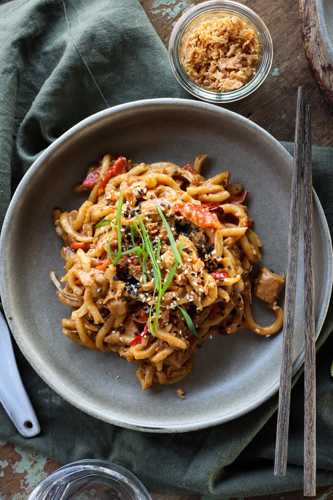

Creamy Peanut Butter Jackfruit Noodles

Noodles
This is a quick noodle dish that is loaded with flavor.
Ingredients
- 1 bell pepper, sliced
- 2 cups canned young green jackfruit, roughly chopped
- 1 Tbsp vegetable oil
- 14 oz pre-cooked udon noodles
- 1 stalk green onion, sliced, light and dark green parts separated
Steps
- To a saute pan on medium-high heat, cook the bell pepper and jackfruit in the oil for 3-4 minutes.
- Meanwhile, combine the sauce ingredients in a jar.
- Add the udon noodles and the white and light green parts of the green onion to the pan. Gently break the noodles apart, cooking for 2 minutes.
- Pour the sauce into the pan and cook until everything is well coated in sauce.
- Garnish with the dark green parts of the green onion, and add any other desired toppings. Enjoy!